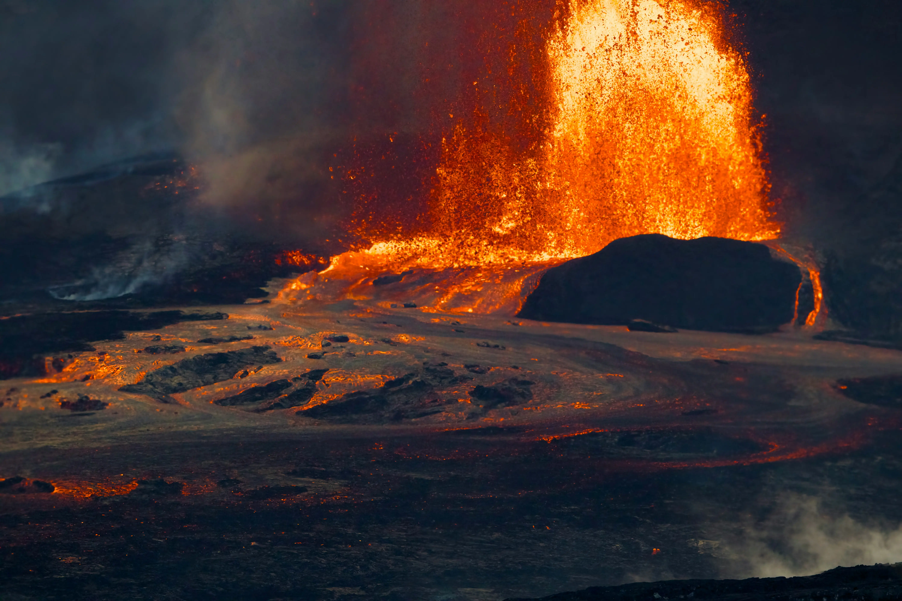
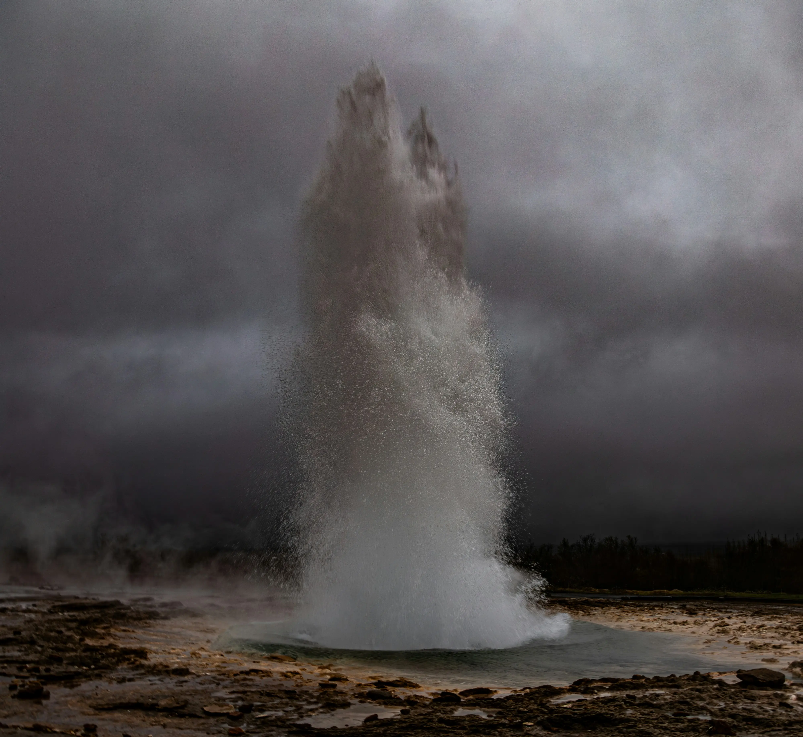
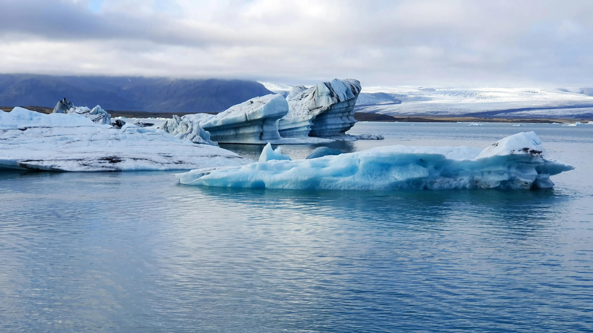
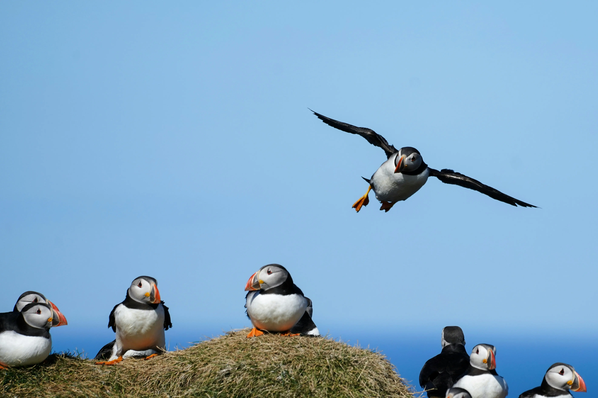
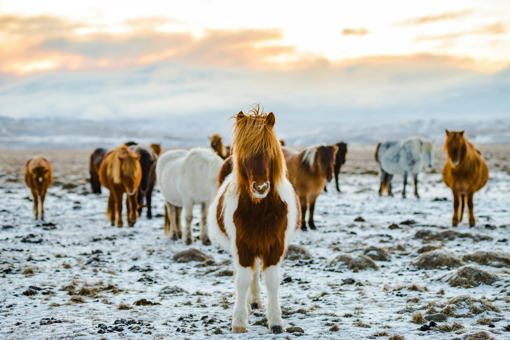

Průzkum Islandu: Geotermální síla a ledovce
Cestopisná zpráva o sopečné aktivitě a tajících masivech
Publikováno: | Autor: David Mezírek
Vstup do země ohně a ledu
Island nabízí unikátní pohled na geologické procesy...

Geotermální prameny
Voda zde dosahuje bodu varu přímo pod povrchem...

Záběry z expedice
Podívejte se na videozáznam z dronu nad ledovcovou lagunou:

Fauna a flóra severské tundry
I přes drsné klima zde nacházíme specifické ekosystémy.

